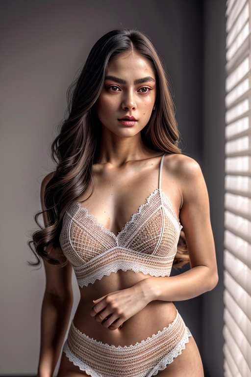
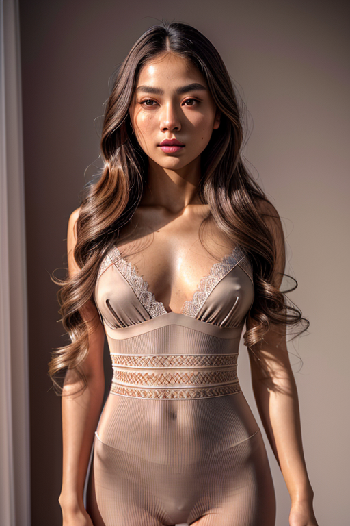
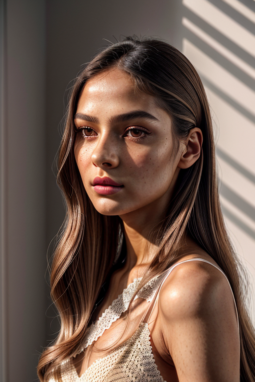

Browse soft images. Page 11 of curated soft-style portrait collection.
  Here we highlight page11, aiming for clean structure, quick scanning, and useful context. Internal navigation leads to related items with comparable tone or composition. This reduces bounce and supports exploration within the same theme. If you are comparing alternatives, keep an eye on subtle differences in framing, contrast, and color balance. The image aims to deliver a straightforward visual impression while keeping the file lightweight. A brief explanation clarifies the subject and lighting so visitors can quickly decide where to go next. The image aims to deliver a straightforward visual impression while keeping the file lightweight. A brief explanation clarifies the subject and lighting so visitors can quickly decide where to go next. If you are comparing alternatives, keep an eye on subtle differences in framing, contrast, and color balance. Internal navigation leads to related items with comparable tone or composition. This reduces bounce and supports exploration within the same theme. Internal navigation leads to related items with comparable tone or composition. This reduces bounce and supports exploration within the same theme. If you are comparing alternatives, keep an eye on subtle differences in framing, contrast, and color balance.